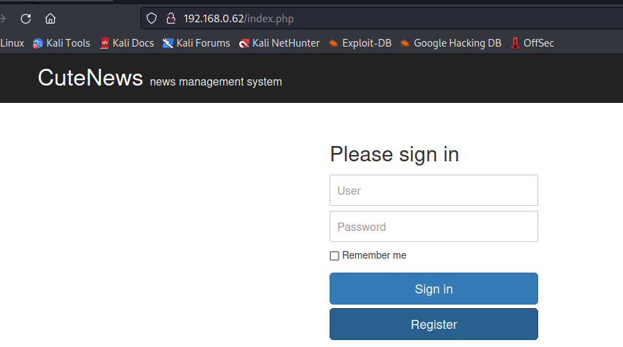

Cute VM
in the firs nmap scan we have some ports open:
port 110 is hosted the pop3 service
port 22 is hosted SSH service
port 995 is hosted also pop3 service
port 80 is hosted HTTP service with apache2
also port 88 is hosted http
now i will check the http webserver to get more information of the VM
as we can see, it is the default page of apache2, so we will dirb it
command:
dirb http://192.168.0.62/
here we found /index.php

its a login, we will searchsploit for cutenews, in the bottom we can see the version of CuteNews is 2.1.2

we always want remote code execution so take that
it doesnt work so i will do it manually, lets check the ‘register’ site
looking here we cant see the capcha so lets take a look on the source page
here it is
go to personal option
a file upload, interesting
it doesent have any restriction on the type of file, so lets upload something to check if the name of the file change, when i take the patron i will upload some PHP to get a reverse shell

here we have it
now open a net cat on your atacker machine on port 4444
and on URL we will execute this command
so we get the reverse shell
user.txt: dcb8189a0eaf7a690a67785a7299be60
executing sudo -l we found the user www-data have sudo perm in hping3
lets use it
here we have all the machine hacked
root flag: 0b18032c2d06d9e738ede9bc24795ff2